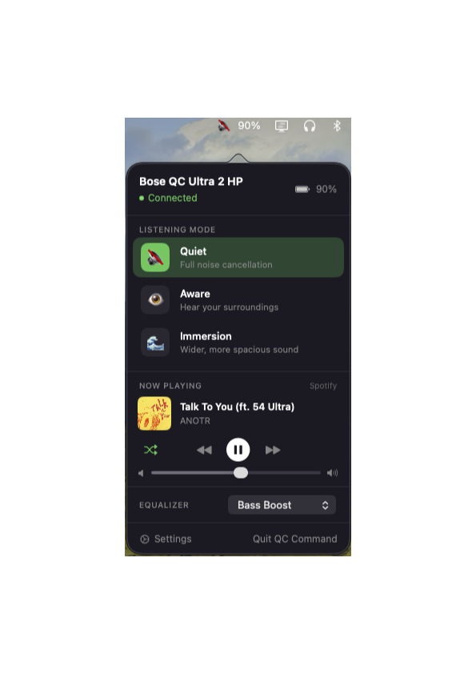
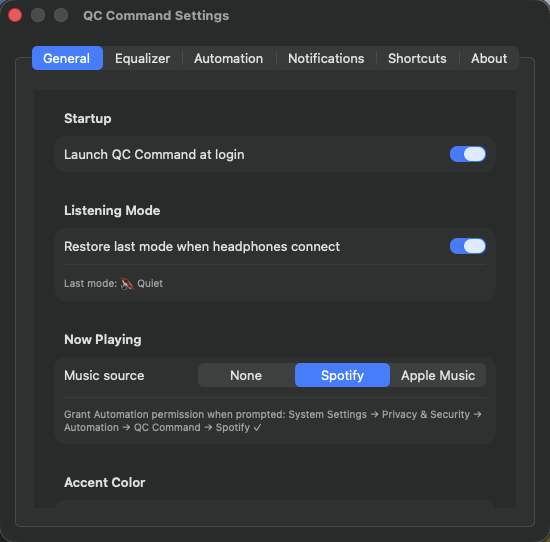
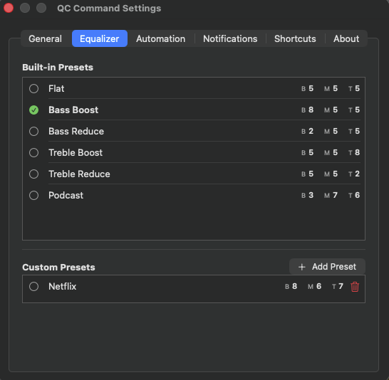
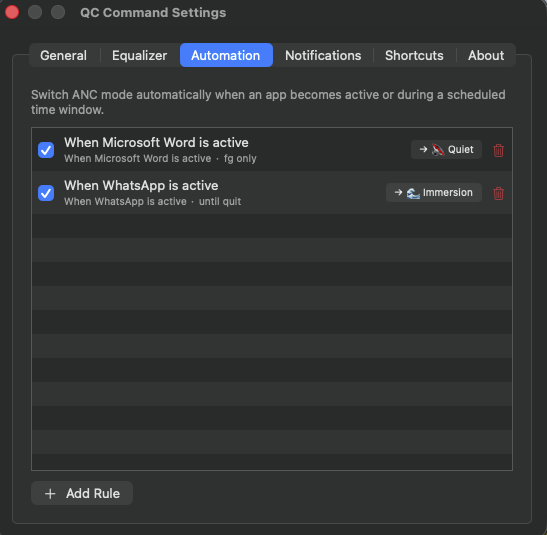
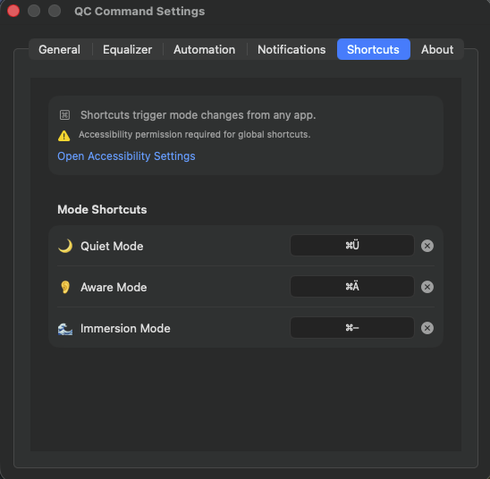

Switch Listening Modes, tune the EQ, check battery, automate routines, and trigger everything with keyboard shortcuts — without ever opening the Bose app.
Free 14-day trial · macOS 13.0 or later · Works with Bose QC Ultra & QC Ultra 2

QC Command lives quietly in your menu bar and gives you instant access to the controls Bose buries in its app.
Switch between Quiet, Aware, and Immersion instantly — no phone, no separate app.
Built-in EQ presets plus your own custom curves, applied directly to your headphones.
See your headphones' charge right in the menu bar — always visible, always current.
Set rules that change modes automatically based on what you're doing — meetings, focus time, commutes.
Assign your own shortcut to each Listening Mode and switch without touching the mouse.
See what's playing and control playback for Spotify or Apple Music straight from the popover.
Available in English, German, French, and Spanish — with custom accent colors to match your style.
Get notified about battery levels and connection changes — configurable to your preference.
Designed to feel like part of macOS — fast, native, and out of your way until you need it.
Launch at login, restore your last Listening Mode automatically, pick your music source, and choose an accent color that fits your setup.

Pick from built-in presets like Bass Boost or Bass Reduce, or build and save your own custom EQ curves — applied straight to your headphones over Bluetooth.

Define rules — like switching to Quiet when you join a call, or Aware when you step outside — and let QC Command handle mode switching for you.

Record your own keyboard shortcut for each Listening Mode directly in the app — no need for the macOS Shortcuts app or extra setup.

Try everything for two weeks. No credit card required to start.
More detailed troubleshooting lives in the full FAQ.
Bose QC Ultra and QC Ultra 2, connected over Bluetooth. Other Bose models with the same Bluetooth protocol may work but aren't officially tested.
No — but make sure it's closed while using QC Command, since it can hold the Bluetooth connection and block mode switching.
No, it's a Gatekeeper quirk with non-notarized apps. Run xattr -cr /Applications/QCCommand.app in Terminal once, and it's gone for good. Full steps in the FAQ.
One license activates on one device at a time. You can deactivate it from the About tab and activate it on a different Mac whenever you switch.
The app locks until you enter a valid license key or purchase one — your settings and data stay intact and unlock instantly once activated.